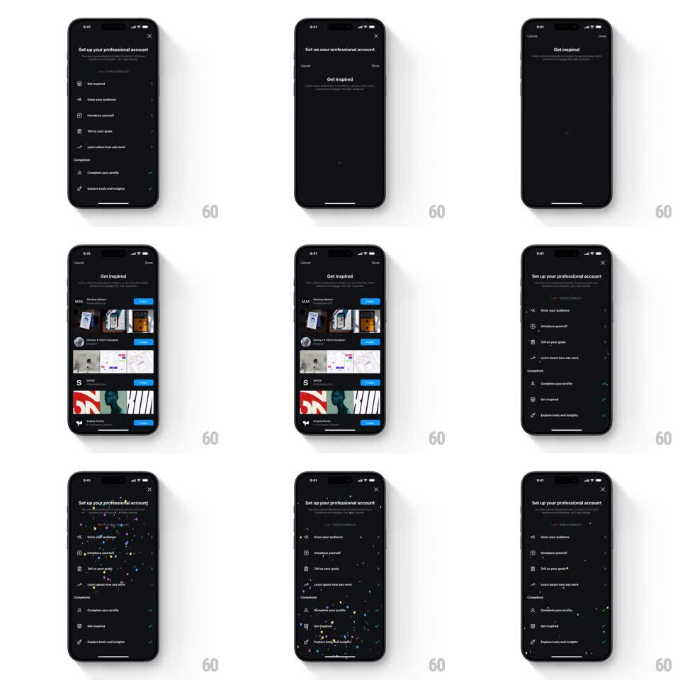

Media
Frame-by-frame

Rebuild this interaction 1:1: Instagram's professional-account setup checklist - finishing a step and tapping Done returns to the checklist, where confetti rains down, the step earns a green check, and the row slides into the Completed section as progress updates.

Rebuild this interaction 1:1: Instagram's professional-account setup checklist - finishing a step and tapping Done returns to the checklist, where confetti rains down, the step earns a green check, and the row slides into the Completed section as progress updates. ## Integration Integration: stack-agnostic spec - springs given as stiffness/damping, timed motions as duration + curve; map every value to your framework and animation library of choice. ## Scene Dark checklist screen "Set up your professional account": a progress sub-line, then rows with icons - Get inspired, Grow your audience, Introduce yourself, Tell us your goals, Learn about how ads work - and a Completed group below (Complete your profile). Tapping a row pushes a detail screen (Get inspired: a list of suggested accounts with Follow buttons). Done returns to the checklist. ## Motion spec Pattern: checklist step completion with confetti and row relocation. - Done taps back with a standard slide-pop; the checklist re-enters. - The moment the checklist lands, confetti fires from the top: ~30 pieces (small rects and circles, green/blue/white) falling with slight horizontal sway and rotation, ~1.2s, gravity-driven, fading near the bottom. - The finished row's trailing chevron swaps to a green check (scale pop 0.5 to 1.15 to 1.0, 250ms). - The row then slides down through the list into the Completed group (300ms, ease-in-out) while the remaining rows close the gap above it - one continuous reflow, not a fade swap. - The progress sub-line count ticks up as the row lands. ## Calibration - Confetti is a single burst, not a loop; it must be gone before the user can read the updated list. - Row relocation waits for the check pop - sequence is check, then move. ## Reduced motion No confetti; the row moves with a 200ms crossfade reflow. ## Don't miss - Confetti renders over the checklist rows, not behind them. - Completed rows keep their icon and title; only the trailing accessory changes to a check.